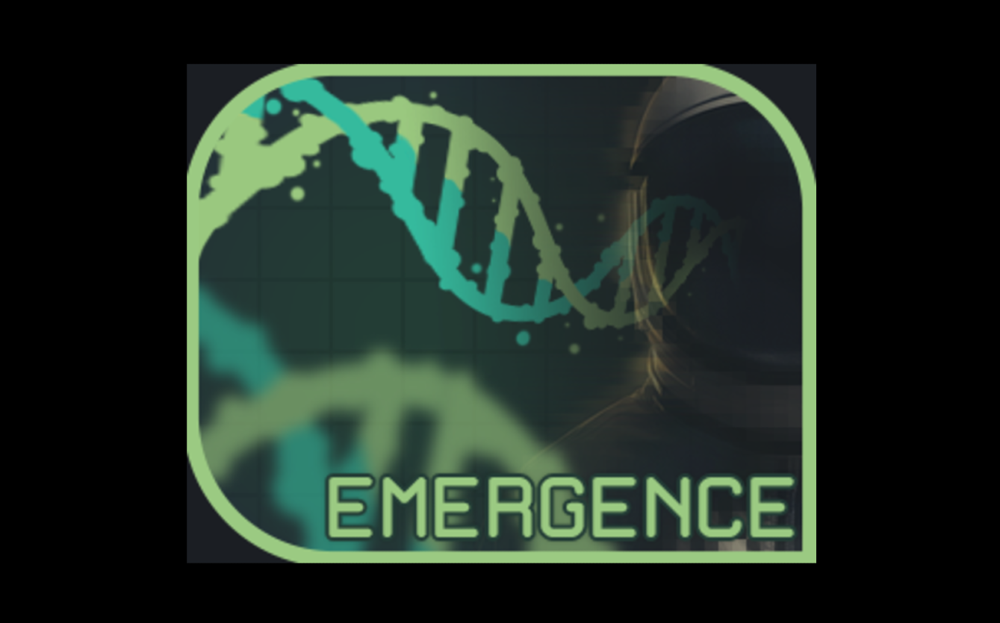
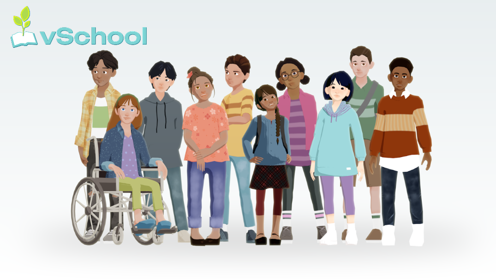
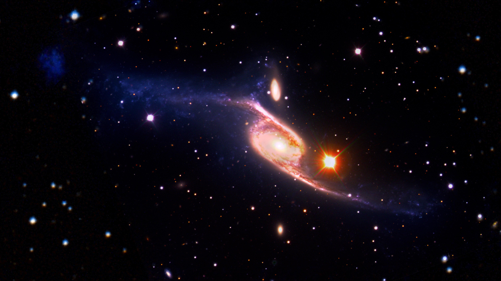
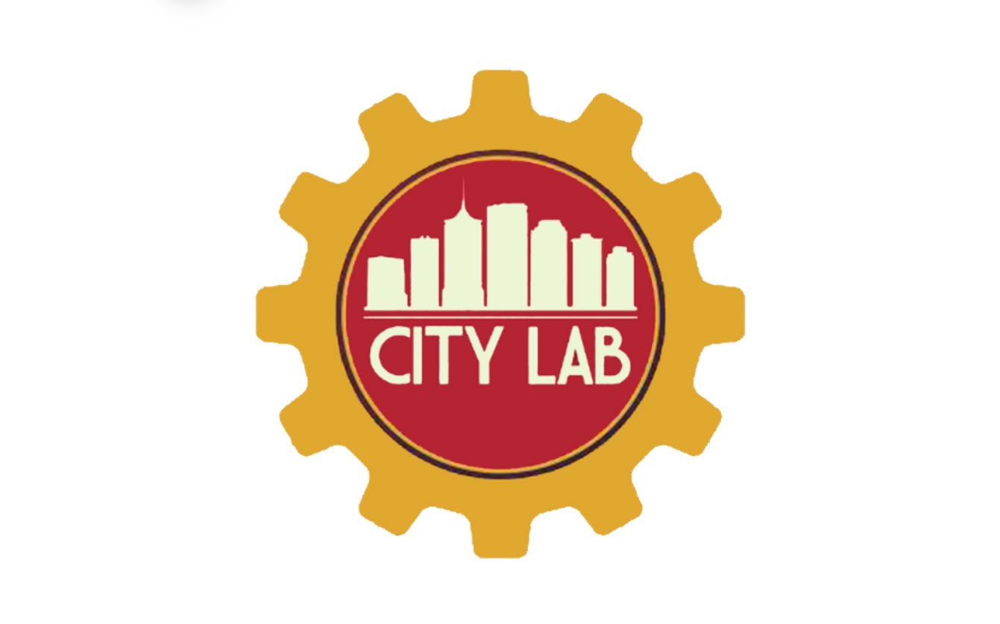

Mission Hydrosci
3D educational game exploring water science, systems thinking, and scientific argumentation.
Full Story →
Games, simulations, and interactive systems designed to support science learning, exploration, and engagement.
3D educational game exploring water science, systems thinking, and scientific argumentation.
Full Story →
Cooperative platformer game focused on nutrition education for middle school learners.
Full Story →
Interactive medical training platform developed to support radiology residents in interpreting radiographs and CT scans.
Full Story →
First-person 3D game designed to make abstract biochemistry concepts more interactive, visual, and accessible.
Full Story →
An interactive behavioral assessment that engages middle school students in an after-school program simulation, where their choices reveal and assess prosocial behaviors.
Full Story →
Interactive click-and-play course module designed to teach the stellar lifecycle through guided learner interactions.
Full Story →Projects exploring public engagement, community-based learning, and experiential education.

Community-centered learning experience focused on design thinking, public engagement, and experiential science education.
Full Story →Many of the projects featured here were developed collaboratively with educators, developers, artists, researchers, and community partners. See individual project pages for more details about my contributions.